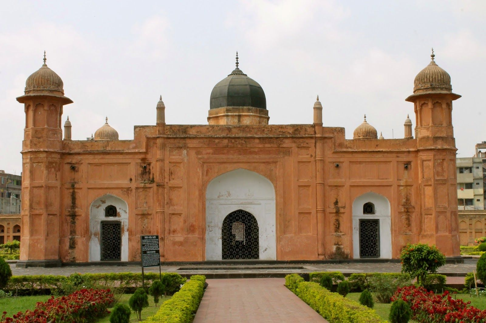

Ahsan Manzil was the official residential palace and seat of the Dhaka Nawab Family. This magnificent building is situated at Kumartoli along the banks of the Buriganga River in Dhaka, Bangladesh.This magnificent building is situated at Kumartoli along the banks of the Buriganga River in Dhaka, Bangladesh. The construction of this palace was started in 1859 and was completed in 1872. It was constructed in the Indo-Saracenic Revival architecture. It has been designated as a national museum.
Lalbagh Fort is the most popular and renowned fort and a great signature of art by Mughal Empire in Bangladesh. It is also known as Fort Aurangabad. It is located in Lalbagh of old Dhaka, hence named so. It is situated by the bank of the river Buriganga in a rich red soil. Lalbagh Fort is an incomplete structure by a Mughal prince and later emperor himself named Muhammad Azam (third son of Aurangazeb). He started the work of the fort in 1678 during his vice-royalty in Bangladesh (Previous Bengal).